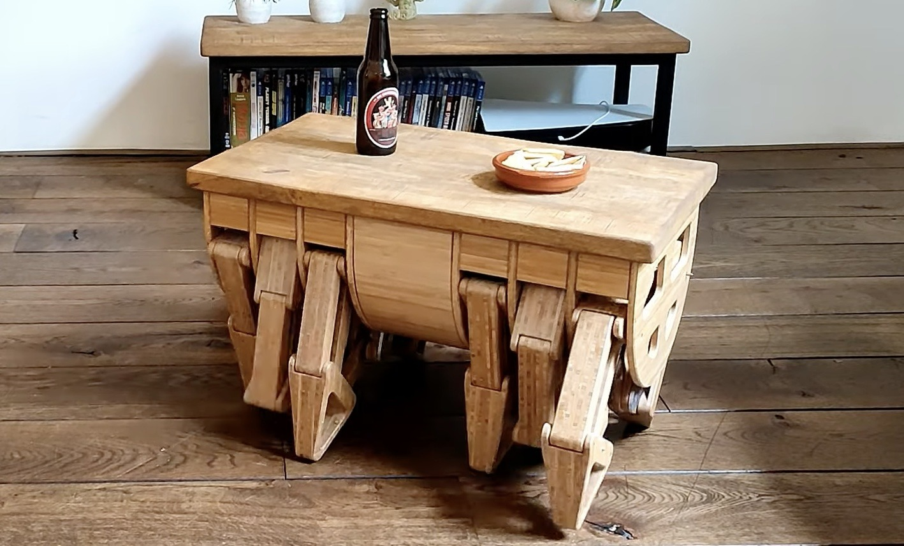
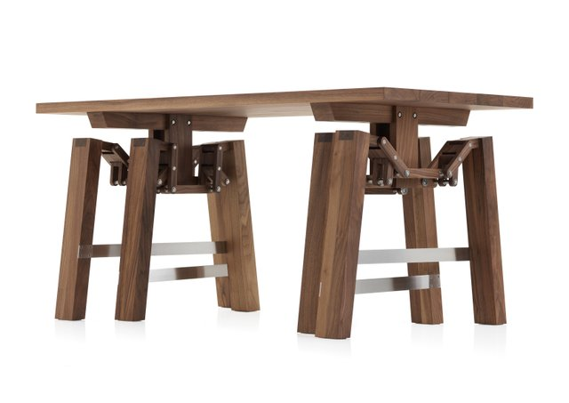
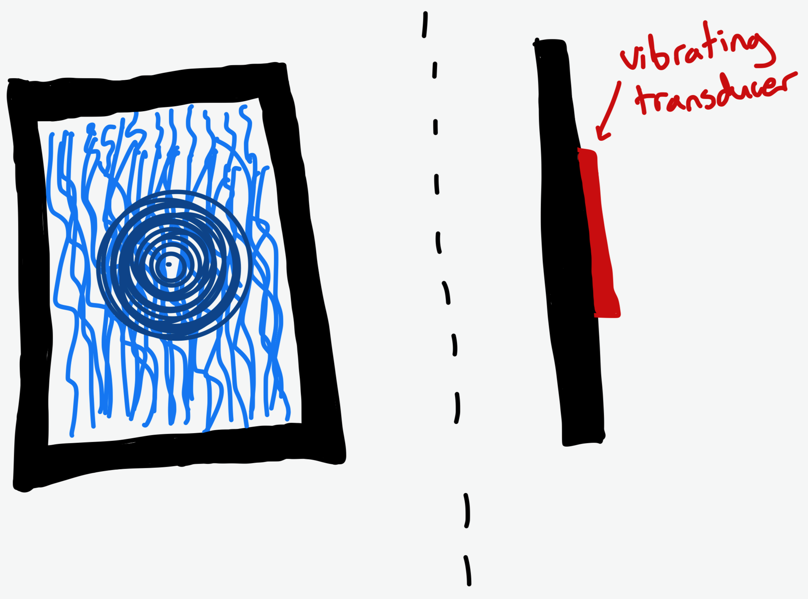
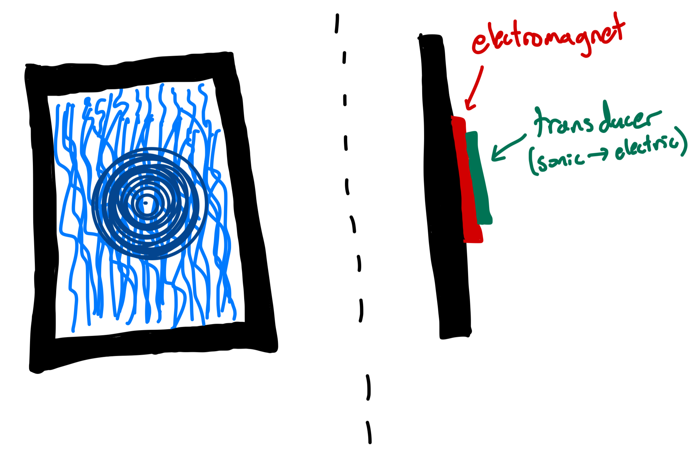
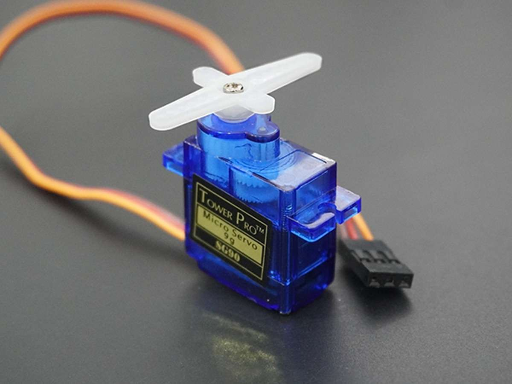
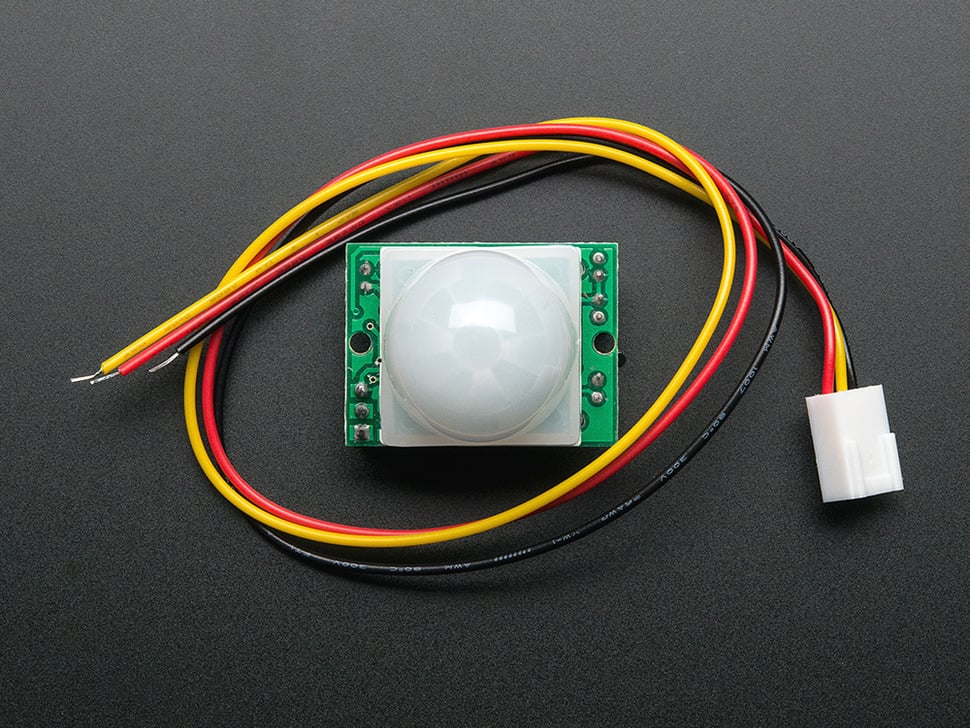
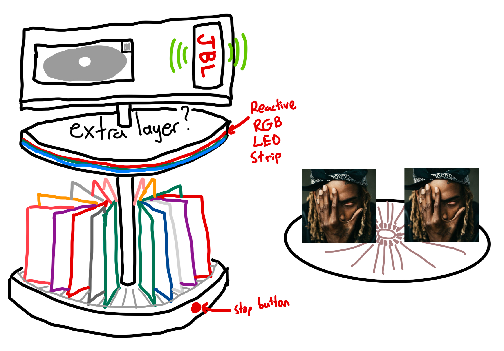
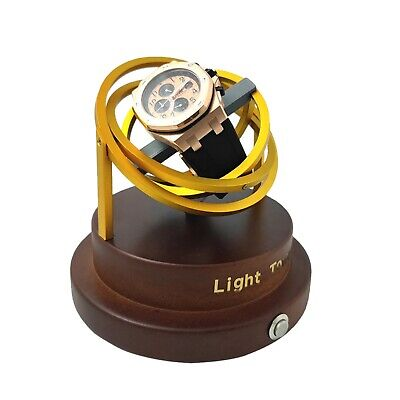

<div class="textcontainer">
<h2 align="center"><b><u>Week 1 >> Intro (Project Ideas)</u></b></h2>
<p class="margin"></p>
Here are a couple cool ideas for my final project...
<p class="margin"></p>
<h4><b>Idea 1: Walking Table</b></h4>
What has 4 legs and can't walk? A table! But what if we could change that? Introducing the Walking Table, a functional piece of furniture
that moves at your command. Need to grab your coffee mug that's all the way across the room, but don't have the energy to get up and
retrieve it? No problem! Just grab the walking table remote and guide your new favorite table over to your side.
<div class="flexrow">


</div>
<p class="margin"></p>
In addition to being a fun machine to play around with, the walking table can also be used functionally. The main use case I see is to help out
elderly/disabled people that have difficulty retrieving objects around the house. These people can use the table as an assistant to bring things
over to them. One thing to note here is that this has already been done (see picture). While I realize that it doesn't really matter if it's been done
already, I would like to make a project where I'm not just referencing somebody else's documentation the entire time. That being said, here are some
modifications I could make to the project in order to make it a little different:
<ul>
<li>Make it smaller, with fewer parts (fewer legs)</li>
<li>Add a height-adjustment capability</li>
<li>Make the tabletop a cool lacquer-wood inlaid kind of design</li>
</ul>
<p class="margin"></p>
<h4><b>Idea 2: Music Visualizer</b></h4>
Remember the scene in Jurassic Park where the T-Rex starts to stomp and the camera pans to the puddle on the ground?
Imagine being able to see this with your own eyes &mdash; except without a giant dinosaur chasing you! The idea here is to form a device that
visualizes music based on vibrations. Some particular ways to carry out this idea include:<p></p>
<ul>
<li>
Wall-Mounted Sonic Waterfall Ambient Light Source: As the name implies, here we have a wall-mounted, aesthetic, dynamic artwork that features a sheet of water
flowing down a plastic or glass (transparent) surface that is visible to the user. The water is lit up by a series of LEDs that (maybe) respond to
music. But the real cool part is the transducer behind the waterfall, which creates ripples corresponding to the music. The idea behind this
project is combining music visualization with a practical use, like a nightlight or just an ambient light source for various uses.
<div class="flexrow"></div>
</li>
<p></p>
<li>
Ferrofluid Version: Instead of water, we use ferrofluid. Instead of a vibrating transducer, we use an electromagnet. The flow of energy would
follow as beginning at the speaker, then these vibrations would be captured by a microphone, which would convert the signals to an electric
current into the electromagnet, which would then effectively cause the ferrofluid to react to the music.
<div class="flexrow"></div>
</li>
</ul>
<p class="margin"></p>
<h4><b>Idea 3: CD Carousel</b></h4>
I just recently started a CD collection, and want to organize the CDs in an interesting kind of way. I want to make it at least a little dynamic and aesthetically
pleasing, with lights and movements. The design I came up with includes a multi-story rotating carousel that holds the CDs on the bottom shelves, and then
holds the CD player and speaker on the top shelf. To make it more interesting, I'll put a reactive RGB LED strip somewhere (maybe on the thin layer of
one of the rotating wheels) that reacts to sound. Additionally, the wheels will idly rotate (in opposite directions), with a motion sensor to allow the user to
stop the rotation of the wheel in order to select a record to play.
<p></p>
Rough details:
<ul>
<li>Material: <b>Wood</b> and <b>Brass</b> for a more warm aesthetic. Wood for the different layer bodies, and brass for the central axle and
maybe some furnishing / aesthetic placement.</li>
<li>A few servo motors to drive the wheel rotations.</li>
<li>A motion sensor on/off stop button to toggle wheel rotation functionality.</li>
<li>Wooden grooves in the wheels to hold the CD cases.</li>
</ul>
<p></p>
<div class="flexrow">


</div>
<p></p>
Here is a rough sketch of what the CD Carousel would look like:
<div class="flexrow">

</div>
<p></p>
Some challenges I might encounter in this project:
<ul>
<li>Ensuring the carousels can turn smoothly and quietly.</li>
<li>Seamless implementation of the motion sensor on/off switch, servo motors, and corresponding power source.</li>
<li>Securing CDs on the wheel to make sure they don't fall over when rotated.</li>
</ul>
<p class="margin"></p>
<h4><b>Idea 4: Mechanical Watch Winder</b></h4>
Recently, I woke up, got ready for the day, and put on my watch, but saw that it read 8:30 when it was really 10:00! Mechanical watches usually
have a power supply of up to 42 hours, and apparently I had left it sitting for more than it could handle. To treat this problem, a device that constantly
rotates slowly throughout the day could wind the watch, hands-free, ensuring that the device is always fully functional.
<p></p>
<div class="flexrow">

</div>